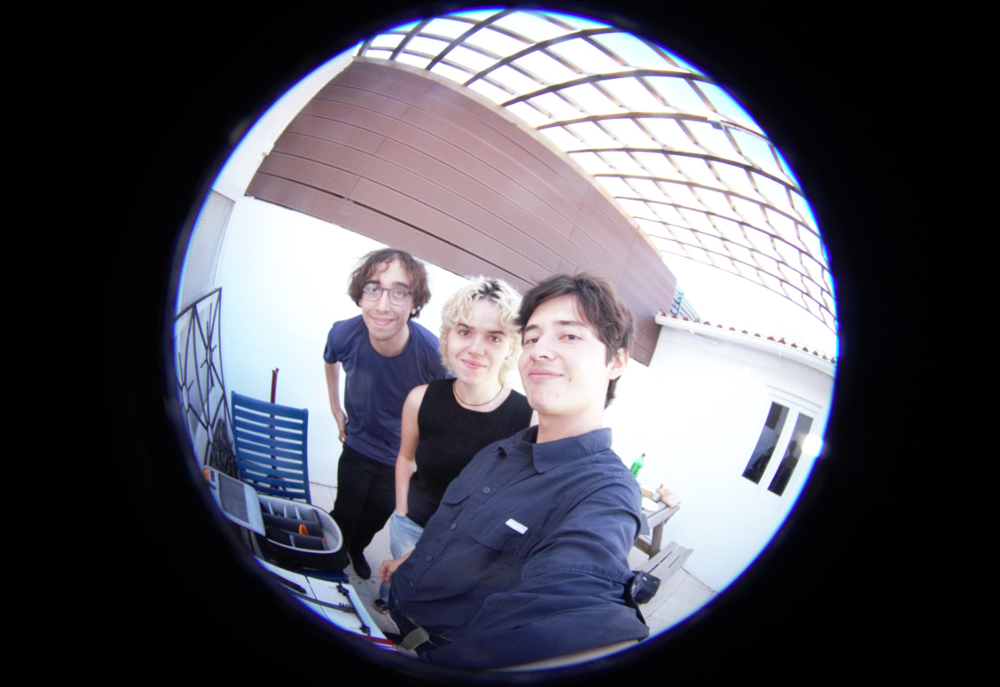
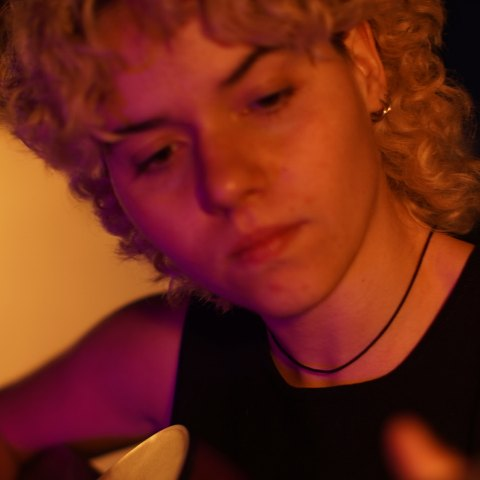
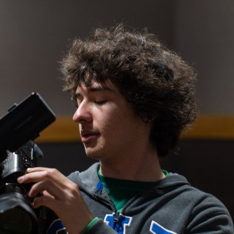
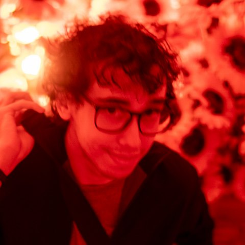

We are three students with a deep love for film and sound, and we are currently working on bringing a very special film project to life.
This film is a true passion project for us. It is a story about loss, grief, and the difficult process of coming to terms with the death of someone we love. The project is very close to my heart, as it is inspired by my own experience with loss and death.
For this project I am stepping into the role of director for the first time. I’m incredibly lucky to be doing this alongside my close friends Charlie and Valdir, who are both amazing filmmakers. Charlie is working on camera, and Valdir is our Director of Photography.
We are putting a lot of our time, energy and heart into this project, and we are incredibly excited to share it with you.
About us

-

Mara Director -

Charlie Camera -

Valdir Director of Photography - Marta Assistant Director
- Sara
- Kai
Any support, big or small, would mean a lot to us and would help us bring this story to life.
Thank you for supporting us!